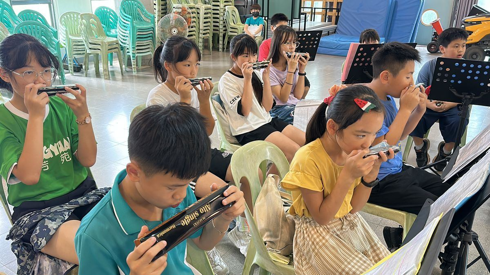

Harmonica Club口琴社團
Made up of students from grades 3 to 6, the Harmonica Club is where members learn joyfully, express themselves, and build teamwork. Every year, they take the stage at the Changhua County Student Music Competition to share their music.
由本校3到6年級學生組成，希望每位成員都能在歡樂中學習、表達自我、發展團隊合作精神，每年也透過參與彰化縣學生音樂比賽，讓學生能站上舞台，享受音樂。